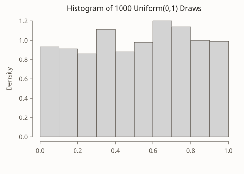
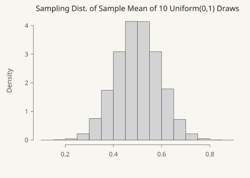
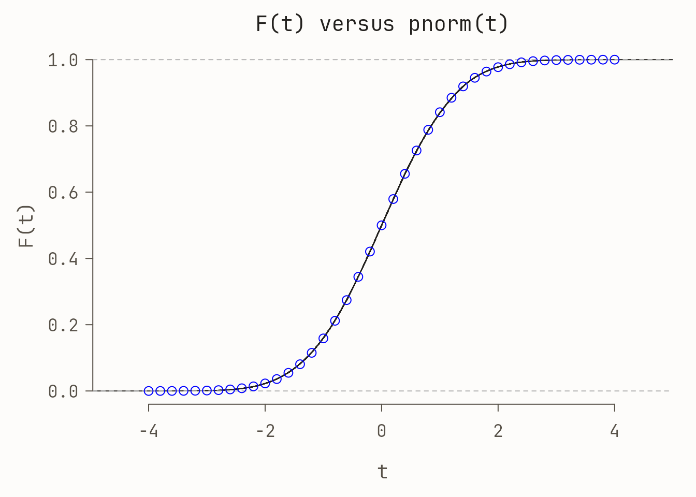
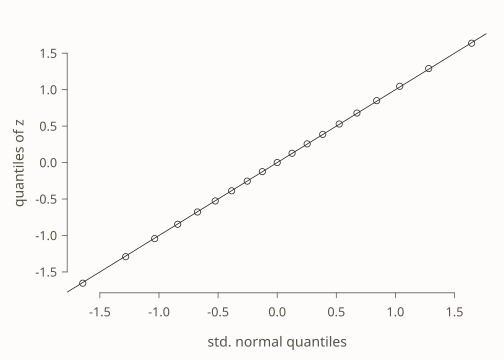
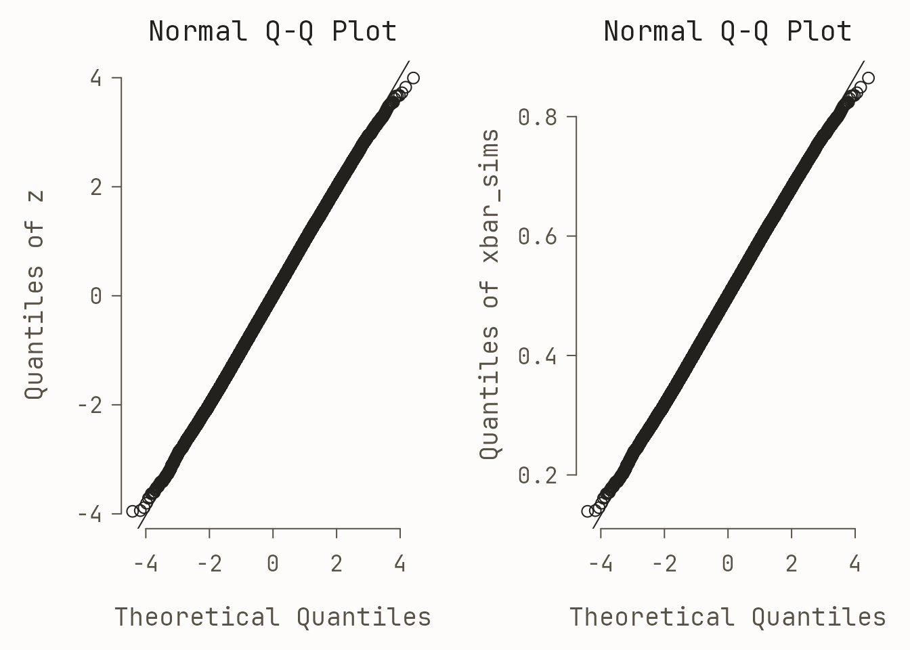
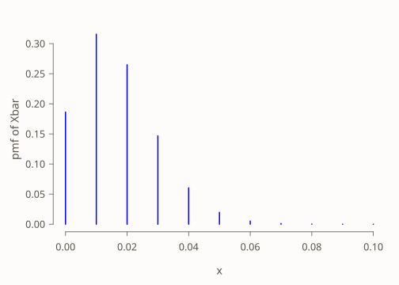
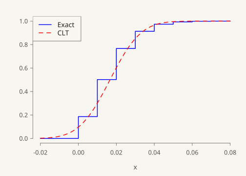

# set the seed to get the same draws I did
set.seed(12345)
hist(runif(1000), xlab = '', freq = FALSE,
main = 'Histogram of 1000 Uniform(0,1) Draws')
Teaching & explainers 8 May 2021 13 min
The simplest version of the central limit theorem (CLT) says that if \(X_1, \dots, X_n\) are iid random variables with mean \(\mu\) and finite variance \(\sigma^2\)
\[ \frac{\bar{X}_n - \mu}{\sigma/\sqrt{n}} \rightarrow_d N(0,1) \] where \(\bar{X}_n = \frac{1}{n} \sum_{i=1}^n X_i\). In other words, if \(n\) is sufficiently large, the sample mean is approximately normally distributed with mean \(\mu\) and variance \(\sigma^2/n\), regardless of the distribution of \(X_1, \dots, X_n\). This is a pretty impressive result! It is so impressive, in fact, that students encountering it for the first time are usually a little wary. I’m typically asked “but how large is sufficiently large?” or “how do we know when the CLT will provide a good approximation?” My answer is disappointing: without some additional information about the distribution from which \(X_1, \dots, X_n\) were drawn, we simply can’t say how large a sample is large enough for the CLT to work well. At this point, someone invariably volunteers “but in my high school statistics course, we learned that \(n = 30\) is big enough for the CLT to hold!”
I’ve always been surprised by the prevalence of the \(n \geq 30\) dictum. It even appears in Charles Wheelan’s Naked Statistics, an otherwise excellent book that I assign as summer reading for our incoming economics undergraduates: “as a rule of thumb, the sample size must be at least 30 for the central limit theorem to hold true.” In this post I’d like to set the record straight: \(n\geq 30\) is neither necessary nor sufficient for the CLT to provide a good approximation, as we’ll see by examining two simple examples. Along the way, we’ll learn about two useful tools for visualizing and comparing distributions: the empirical cdf, and quantile-quantile plots.
We’ll start by showing that the CLT can work extremely well even when \(n\) is much smaller than \(30\) and the random variables that we average are far from normally distributed themselves. Along the way we’ll learn about the empirical CDF and quantile-quantile plots, two extremely useful tools for comparing probability distributions.
Informally speaking, a Uniform\((0,1)\) random variable is equally likely to take on any continuous value in the range \([0,1]\).1 Here’s a histogram of 1000 random draws from this distribution:
1 More formally, \(U\sim\) Uniform\((0,1)\) if and only if \(\mathbb{P}(a \leq U \leq b) = (b - a)\) for any \(0 \leq a \leq b \leq 1\).

This distribution clearly isn’t normal! Indeed, its probability density function is \(f(x) = 1\) for \(x \in [0,1]\). This is a flat line rather than a bell curve. But if we average even a relatively small number of Uniform\((0,1)\) draws, the result will be extremely close to normality. To see that this is true, we’ll carry out a simulation in which we draw \(n\) Uniform\((0,1)\) RVs, calculate their sample mean, and store the result. Repeating this a large number of times allows us to approximate the sampling distribution of \(\bar{X}_n\). I’ll start by writing a function get_unif_sim that takes a single argument n. This function returns the sample mean of n Uniform\((0,1)\) draws:
Next I’ll use the replicate function to call get_unif_sim a large number of times, nreps, and store the results as a vector called xbar_sims. Here I’ll take \(n = 10\) standard uniform draws, blatantly violating the \(n \geq 30\) rule-of-thumb:

A beautiful bell curve! This certainly looks normal, but histograms can be tricky to interpret. Their shape depends on how many bins we use to make the plot, something that can be difficult to choose well in practice. In the following two sections, we’ll instead compare distribution functions and quantiles.
If \(X \sim\) Uniform\((0,1)\), then \(\mathbb{E}(X) = 1/2\) and \(\text{Var}(X) = 1/12\), which follows from \(\mathbb{E}[X^2]=1/3\) and the definition of variance.2 For \(n = 10\), \[
\frac{\sigma}{\sqrt{n}} = \frac{1}{\sqrt{12}} \cdot \frac{1}{\sqrt{10}} = \frac{1}{\sqrt{120}}
\] so if the CLT provides a good approximation in this example, we should find that \[
\frac{\bar{X}_n - 1/2}{1/\sqrt{120}} = \sqrt{120} (\bar{X}_n - 1/2) \approx N(0,1)
\] in the sense that that the cumulative distribution function (CDF) of \(\sqrt{120} (\bar{X}_n - 1/2)\), call it \(F\), is approximately equal to the standard normal CDF pnorm(). An obvious way to see if this holds is to plot \(F\) against pnorm() and see how they compare. From now on, we’ll be working with the z-scores of xbar_sims rather than the raw simulation values themselves, so we’ll start by constructing them, subtracting the population mean and dividing by the population standard deviation:
2 If you’re taking introductory probability and statistics, filling in the missing details for these calculations would be an excellent homework problem!
We haven’t worked out an expression for the function \(F\), but we can approximate it using our simulation draws xbar_sims. We do this by calculating the empirical CDF of our centered and standardized simulation draws z. Recall that if \(Z\) is a random variable, its CDF \(F\) is defined as \(F(t) = \mathbb{P}(Z \leq t)\). Given a large number of observed random draws \(z_1, \dots, z_J\) from the distribution of \(Z\), we can approximate \(\mathbb{P}(Z \leq t)\) by calculating the fraction of observed draws less than or equal to \(t\). In other words \[
\mathbb{P}(Z \leq t) \approx \frac{1}{J}\sum_{j=1}^J \mathbf{1}\{z_j \leq t\}
\] where \(\mathbf{1}\{z_j \leq t \}\) is the indicator function: it equals one if \(z_j\) is less than or equal to the threshold \(t\) and zero otherwise. The sample average on the right-hand side of the preceding expression is called the empirical CDF. It uses empirical data–in this case our simulation draws \(z_j\)–to approximate the unknown CDF. By increasing the number of random draws \(J\) that we use, we can make this approximation as accurate as we like.3 For example, we don’t know the exact value of \(F(0)\), the probability that \(Z \leq 0\). But using our simulated values z from above, we can approximate it as
3 Here we take \(J = 100,000\) which is more than enough for the purposes of this exercise.
and if we wanted the probability that \(Z \leq 2\), we could approximate this as
So far so good: these values agree with pnorm(0), which equals 0.5, and pnorm(2), which is approximately 0.9772. But we’ve only looked at two values of \(t\). While we could continue trying additional values one at a time, it’s much faster to use R’s built-in function for computing an empirical cdf, ecdf(). First we pass our simulated z-scores z into ecdf() function to calculate the empirical CDF and plot the result. Next we overlay some points from the standard normal CDF, pnorm in blue for comparison:

The fit is almost perfect, despite \(n=10\) being far below 30. This kind of plot is much more informative than the histogram from above, but it can still be a bit difficult to read. When constructing confidence intervals or calculating p-values it is probabilities in the tails of the distribution that matter most, i.e. values of \(t\) that are far from zero in the plot. Ideally, we’d like a plot that makes any discrepancies in the tails jump out at us. That is precisely what we’ll construct next.
So far we’ve seen that the histogram of xbar_sims is bell-shaped, and that the empirical CDF of sqrt(120) * (xbar_sims - 0.5) is well-approximated by the standard normal CDF pnorm(). If you’re still not convinced that the CLT can work perfectly well with \(n = 10\), the final plot that we’ll make should dispel any remaining doubts. As its name suggests, a quantile-quantile plot compares the quantiles of two probability distributions. But rather than comparing two quantile functions plotted against \(p\), it compares the quantiles of two distributions plotted against each other. This is a bit confusing the first time you encounter it, so we’ll take things step-by-step.
If our simulated z-scores from above are well-approximated by a standard normal distribution, then their median should be close to that of a standard normal random variable, i.e. zero. This is indeed the case:
But it’s not just the medians that should be close to each other: all the quantiles should be. So now let’s look at the 25th-percentile and 75th-percentile as well. Rather than computing them one-by-one, we can generate them in a single batch by first setting up a vector p of probabilities and using rbind to print the results in a convenient format
25% 50% 75%
normal -0.6744898 0.0000000000 0.6744898
simulation -0.6779843 0.0001169817 0.6791994This looks good as well. If we want to compare quantiles over a finer grid of values for p, it’s more convenient to make a plot rather than a table. Suppose that we treat the values qnorm as an \(x\)-coordinate and the quantiles of z as a \(y\)-coordinate. If the CLT is giving us a good approximation, then we should have \(x \approx y\) and all of the points should fall near the 45-degree line. This is indeed what we observe:

The plot that we have just made is called a normal quantile-quantile plot. It is constructed as follows:
p of probabilities.qnorm(p). Call these \(x\).quantile(your_data_here, probs = p). Call them \(y\).If the points all fall on a line, then the quantiles of the observed data agree with those of some normal distribution, although perhaps not a standard normal. If we standardize the data before making such a plot, as we did to construct z above, the relevant line will be the 45-degree line. If not, it will be a different line but the interpretation remains the same. The easiest way to make a normal quantile-quantile plot in R is by using the function qqnorm followed by qqline. We could do this either using the centered and standardized simulation draws z or the original draws xbar_sims

The only difference between these two plots is the scale of the \(y\)-axis. The plot that uses the original simulation draws xbar_sims has a \(y\)-axis that runs between \(0.1\) and \(0.9\) because the sample average of \(\text{Uniform}(0,1)\) random variables must lie within the interval \([0,1]\). In contrast, the corresponding \(z\)-scores lie in the range \([-4,4]\).4 For \(x\)-values between \(-3\) and \(3\), we can’t even see the line generated by qqline: the quantiles of our simulation draws are extremely close to those of a normal distribution. Outside of this range, however, we see that the black circles curve away from the line. For values of \(x\) around \(-4\), the quantiles of z are above those of a standard normal, i.e. shifted to the right. For values of \(x\) around \(4\), the picture is reversed: the quantiles of z are below those of a standard normal, i.e. shifted to the left. This means that z has lighter tails than a standard normal: it is a bit less likely to yield extremely large positive or negative values, for example
4 Recall that we subtracted \(1/2\) and multiplied by \(\sqrt{120}\approx 11\) to construct z from xbar_sims.
simulation normal
0.01% -3.563576 -3.719016This makes perfect sense. A standard normal can take on arbitrarily large values, while the sample mean of ten uniforms is necessarily bounded above by \(1\). So if you want to carry out a \(0.01\%\) test (\(\alpha = 0.0001\)), the approximation provided by the CLT won’t quite cut it with \(n = 10\) in this example. But for any conventional significance level, it’s nearly perfect:
Now suppose that \(n = 100\) and \(X_1, \dots X_n \sim\) iid Bernoulli\((1/60)\). What is the CDF of \(\bar{X}_n\)? Rather than approximating the answer to this question by simulation, as we did in the uniform example from above, we’ll work out the exact result and compare it to the approximation provided by the CLT. If \(X_1, \dots, X_n \sim\) iid Bernoulli\((p)\), then by definition the sum \(S_n = \sum_{i=1}^n X_i\) follows a Binomial\((n,p)\) distribution. The probability mass function and CDF of this distribution are available in R via the dbinom() and pbinom() commands. So what about \(\bar{X}_n\)? Notice that \[
\mathbb{P}(\bar{X}_n = x) = \mathbb{P}(S_n/n = x) = \mathbb{P}(S_n = nx)
\] Thus, if \(f(s) = \mathbb{P}(S_n = s)\) is the pmf of \(S_n\) for \(s \in \{0, 1, \dots n\}\), it follows that \(f(nx)\) is the pmf of \(\bar{X}_n\) for \(x \in \{0, 1/n, 2/n, \dots, 1\}\). This means that we can use dbinom to plot the exact sampling distribution of \(\bar{X}_n\) when \(n = 100\) and \(p = 1/60\) as follows5
5 Notice that I “zoomed in” on the most interesting part of the plot by setting xlim = c(0, 0.1).

The result is far from a normal distribution. Not only is it noticeably discrete, it is also seriously asymmetric. Another way to see this is by examining the CDF. If the central limit theorem is working well in this example, we should have \(\bar{X}_n \approx N\big(p, p(1 - p)/n\big)\). Extending the idea from above, we can plot the exact CDF of \(\bar{X}_n\) using the binomial CDF pbinom() and compare it to the approximation suggested by the CLT:
x <- seq(-0.02, 0.08, by = 0.001)
F_x_bar <- pbinom(n * x, size = n, prob = p)
F_clt <- pnorm(x, p, sqrt(p * (1 - p) / n))
plot(x, F_x_bar, type = 's', ylab = '', lwd = 2, col = 'blue')
points(x, F_clt, type = 'l', lty = 2, lwd = 2, col = 'red')
legend('topleft', legend = c('Exact', 'CLT'), col = c('blue', 'red'),
lty = 1:2, lwd = 2)
The approximation is noticeably poor, but is the problem serious enough to affect any inferences we might hope to draw? Suppose we wanted to construct a 95% confidence interval for \(p\). The textbook approach, based on the CLT, would have us report \(\widehat{p} \pm 1.96 \times \sqrt{\widehat{p}(1 - \widehat{p})/n}\) where \(\widehat{p}\) is the sample proportion, i.e. \(\bar{X}_n\). Let’s set up a little simulation experiment to see how well this interval performs when \(n = 100\) and \(p = 1/60\).
# Simulate 5000 draws for phat
# with p = 1/60, n = 100
set.seed(54321)
draw_sim_phat <- function(p, n) {
x <- rbinom(n, size = 1, prob = p)
phat <- mean(x)
return(phat)
}
p_true <- 1/60
sample_size <- 100
phat_sims <- replicate(5000, draw_sim_phat(p = p_true, n = sample_size))
# What fraction of the CIs cover the true value of p?
SE <- sqrt(phat_sims * (1 - phat_sims) / sample_size)
lower <- phat_sims - 1.96 * SE
upper <- phat_sims + 1.96 * SE
coverage_prob <- mean((lower <= p_true) & (p_true <= upper))
coverage_prob[1] 0.824So only 82% of these supposed 95% confidence intervals actually cover the true value of \(p\)! Clearly 100 observations aren’t enough to rely upon the CLT in this example.
I hope these examples have convinced you that, in spite of what you may have heard elsewhere, \(n\geq 30\) is neither necessary nor sufficient for the CLT to provide an adequate approximation. But some important questions remain. First, what can we do in situations like the second example, where we want to carry out inference for a small proportion? The problem is hardly academic: at the time of this writing, the most recent estimate of coronavirus prevalence in the UK was approximately 0.2%, i.e. nearly ten times smaller than the value I used for \(p\) in my second example.6 Second, how did the \(n\geq 30\) folk wisdom arise? Is there anything that we can say about \(n\geq 30\)? Finally, are there any theoretical results that can provide guidance about the quality of the approximation provided by the CLT? These questions will have to wait for a future post!